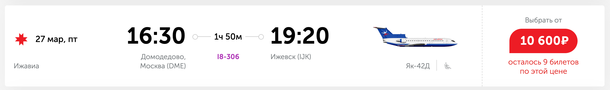
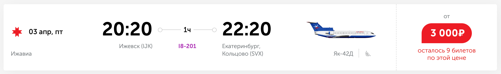

📖 出发前必读：《俄罗斯境内旅行与飞行指南 ver.2026》
雅科夫列夫 Як-42（Yak-42）
- 雅克-42（北约代号：Clobber，意为”破布”），属于中短程客机，研发于20世纪70年代。
- 同样是三发尾吊布局，机身长达36米，载客量可达100-120人，是雅克-40的放大后掠翼版本。
- 采用后掠翼设计，巡航速度提升到了810km/h，相比雅克-40有显著提升。
易兹哈维亚航空（伊热夫斯克航空 Izhavia / I8）

购票平台：国际OTA（携程等）
这是我一开始打算体验Yak-42的开端，我在油管上刷到过这个航司的体验视频，后来因为各种计划打乱了。
我也打算今年体验一下，应该是这个航司最后一架能飞的Yak-42了（RA-42401），只飞两条航线。

| 乘坐体验 | 排班密度 | 性价比 | 稳定程度 |
|---|---|---|---|
| 🌟🌟🌟🌟 | 🌟 | 🌟🌟🌟🌟🌟 | 🌟🌟 |
由雅克42值飞的航班：
- I8305/306 伊热夫斯克-莫斯科DME

- I8201 伊热夫斯克-叶卡捷琳堡